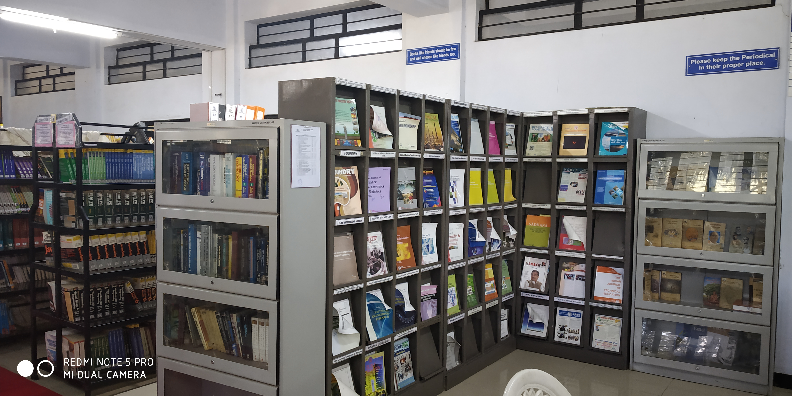
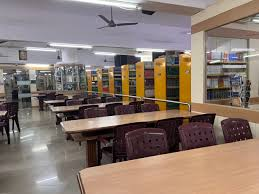

Simple Student Project
The Library Information System is a simple web based platform that provides information about books available in the library. This system helps students easily view the list of books, their authors, and categories.
Libraries play an important role in education. They provide knowledge resources for students, teachers, and researchers. With the help of a library system, users can quickly check which books are available without manually searching through shelves.
This project is developed as a basic website to demonstrate how library information can be displayed using HTML and simple web design techniques. The website contains different sections such as Home, Book List, About Us, and Contact Information.
Students can explore the available books and learn about the services provided by the library. The goal of this project is to make library information easy to access and organized in a simple and user-friendly way.


| Book ID | Book Name | Author | Category |
|---|---|---|---|
| 9100A | Introduction to HTML | John Smith | Programming |
| 9101A | Basic Java | Robert Brown | Programming |
| 9102A | Database Concepts | Lisa White | Database |
| 9103A | Computer Networks | David Miller | Networking |
| 9104A | Learning CSS | Michael Lee | Programming |
| 9105A | JavaScript Basics | Anna Scott | Programming |
| 9106A | Python for Beginners | James Clark | Programming |
| 9107A | Operating System Concepts | William Stallings | Computer Science |
| 9108A | Data Structures | Seymour Lipschutz | Programming |
| 9109A | Software Engineering | Ian Sommerville | Software |
Our library is an important learning center that provides books, study materials, and educational resources for students. The library helps students gain knowledge and improve their academic performance.
The library contains books from different subjects such as computer science, programming, networking, and general knowledge. Students can use the library to read, study, and research various topics related to their courses.
The aim of the library is to encourage reading habits and support the learning process of students. By providing easy access to books and information, the library helps students expand their knowledge and skills.
This Library Information System project demonstrates how basic web technologies like HTML and CSS can be used to display library information in a structured format. It is designed as a simple educational project.
Library Address:
VES Polytechnic Library
Polytechnic Building 1st Floor
Sindhi Society, Chembur
Mumbai, Maharashtra – 400071
India